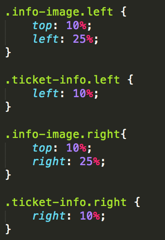
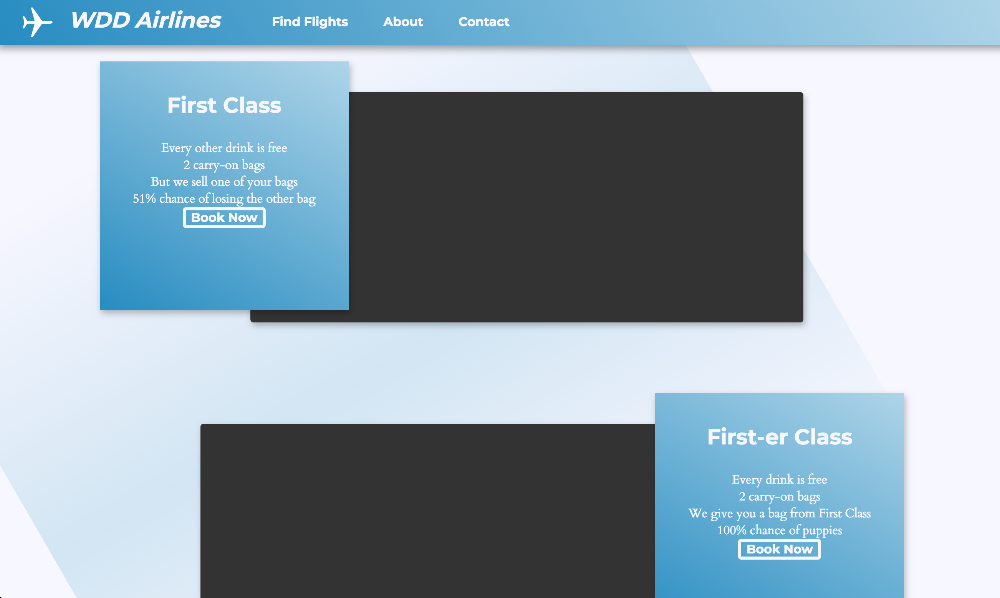
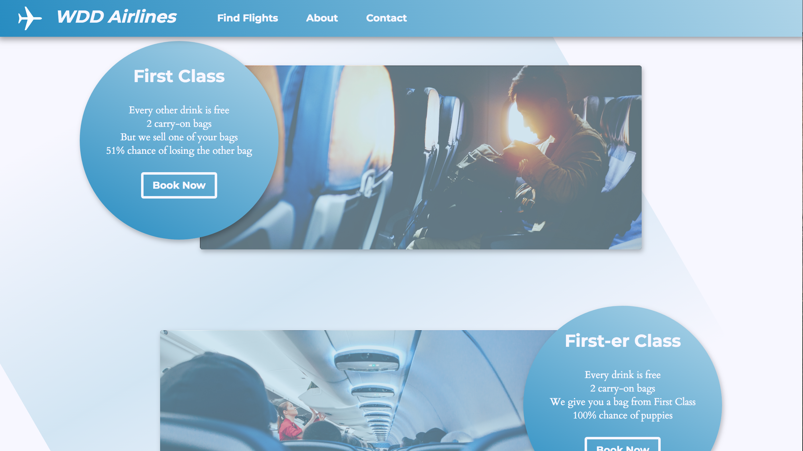

An assignment I made for UC Berkeley's Web Design Course
Spring 2018
Positioning, Box-Model, and More!
This lab will demonstrate some of the amazing things you can do with positioning, in addition to reviewing images, box-model, and other things to add to and exercise your web design tool belt. This assignment is very long because we want to reinforce the importance of positioning -- we do not expect you to finish it entirely within the hour, but we do expect significant progress.
When you've reached the checkpoint (or there are 10 minutes left of class), you can talk to a Instructor/TA to receive the attendance word. If you reach the checkpoint before the end of class, please continue working! Solutions will be posted later. In any scenario, please try to complete as much as possible.
At the end of this hands-on, you should have something like the page below.
Step 0: Why?
Before getting started, refer to the final picture of the site above and discuss with a groupmate the font and color choices. Keep in mind what we discussed in lecture: serifs vs sans-serif, the number and size of fonts, the number of colors, the kind of colors, design motifs, etc. Why were certain design decisions made? What would you change?
Select Montserrat (make sure you've selected it at the weight of Bold 700) and Cardo (at its default weight) because they pair well. Unfortunately, you can't use different fonts for this lab because of initial css properties that we've already supplied :( next time...
Add the provided link from google fonts to your html file
Add the property font-family with Cardo to the body css selector. If you don't know what this looks like, take a look at the top of the css file for a hint
Add the property font-family with Montserrat to the h1 css selector
Great, now your fonts are all prepared. Font choice is extremely important because of how it influences the readability of your site. Don't overlook the need for good fonts!
Step 2: Navbar Madness
One of the first things a user sees on this page is the navbar. Unfortunately, our navbar is broken. Fortunately, you know how to solve the issue.
Use the float property so that "Find Flights," "About," and "Contact" all appear on one line in the navbar
Add a pseudo-selector for those elements and add properties so that the appearance changes when users place their cursor over it
Currently, the navbar disappears when we scroll down. Make it stick to the top of the browser so it is always accessible when a user scrolls. What position would this be?
Once you have done the above step, try scrolling. It looks like our navbar is disappearing underneath content. Add a property to the navbar such that it takes precedence over the other elements on the page and is stacked on top
The hero image is an extremely important visual that users first encounter. But oh no! There is no hero image! Be the hero, save the day, fix our problem. please.
Add hero.jpg in the css as a background-image to the hero selector. Make sure you have the correct relative path from the css file to the image!!!
For a cool effect, use the background-attachment property so that the image doesn't scroll with the page.
Hint
You will need to give it a value of "fixed" for this to work. Learn more
We want to be able to position "Time to Fly" on top of the hero image. Properly use relative and absolute between the hero selector and the hero-text selector so we can get this relationship. Which selector will use relative and which will use absolute? Why?
Once you've done this, add the left and/or bottom and/or top and/or right properties within hero-text to position the text wherever you'd like
So.Much.Better.Thank You.
Step 4: Position. Position. Position.
Time for more practice with the power of position! In this section, we will use a combination of positioning methods to make this section of our site look a w e s o m e.
Let's first work with the background. We are going to look at the relationship between section-container and section-background. Add the appropriate position properties to the two such that the section-background is in the back. One should be position:absolute and one should be position:relative. You'll also need to use z-index.
Take a quick breather -- you're doing really well. Next we are going to deal with a multi-level positioning relationship between ticket-wrapper, info-image, and ticket-info.
Let's take it one step at a time. Between ticket-wrapper, info-image, and ticket-info, which is the parent in this relationship? What kind of position should it have? Relative, absolute, or fixed? Add that property to it.
Cool, you are now down to only two selectors that need to be positioned. These are the children and will take an identical position method so that they can overlap each other (like in the final image shown at the very top of the instructions). Give them each a position
Once you have added these position methods, it is up to you to use a combination of top, right, bottom, and left properties with a variety of class selectors (see the html) to position the elements on the page. There are many possible ways to approach this.
Hint
We recommend using percentages as the values so that the positioning responds to browser resizing. Take a look at the class attributes of info-image and ticket-info in the html, these will help you position. For example, you can use the .info-image.left selector to provide a specific positioning to that element.
Possible Solution
One of Many Solutions
This problem is pretty tricky. So here is one of many possible solutions. Before you simply copy the code, try to understand why it works. Discuss with a TA/instructor or groupmate.

(optional) Depending on how you positioned all these elements, you may actually want to move ticket-wrapper down if it's to close to the hero image. Because of the position method you added to this selector, you can now add the top property to it in order to move it away (further down) from the hero image to create more space.
Your website should now look something like this.

Quick recap: positioning is amazing. By using the relationship between relative and absolute, we were able to overlap different elements and create a cool background. There are so many possibilities!
CHECKPOINT!
Congrats, you've reached the checkpoint! Check-in with an Instructor/TA to get the attendance word and discuss any questions you may have. If there is still time left, continue on with the rest of the lab. If lab is over, still try to find time to complete the lab later.
Step 5: Images, Overlays, and Position
Let's add some style to our page.
To get started, if you want, add a border radius to the .ticket-info selector. Right now, it is too pointy (and that doesn't fit with the design style of the page)
Go to the html and uncomment both img tags that are children of .info-image
For the first img, add the relative path to first.jpg
For the second img, add the relative path to firstfirst.jpg
Add the object-fit property to .info-image img so that the image is contained in the div container (which is .info-image). What value should object-fit have, contain or cover?
Uncomment both overlay divs in the html. We are adding overlays to the image because they are currently too saturated and distracting from the rest of the content of the page
We need to add a position method (relative or absolute) to the overlay selector so that it will be on top of the image. Which position method allows us to do this? Why does it work?
Now we will style overlay selector. The height and width should be at 100% in order to extend across the entire image. We want the colors to be similar to the rest of the page, so add a background color of #ADD4E9, our secondary blue, which will overlay the image. And finally, decrease the opacity
With images and overlays, you should have something like the image below.

Step 6: Buttons and box-model
The "book now" button does not seem clickable at the moment. It also looks terrible. Please fix it.
Use a mix of padding and margins to move the button away from the rest of the content and to "flesh out" the button more (i.e. provide a greater area on which to click the button)
Add some properties to the button pseudo-selector
There are numerous ways your button can act in response to hovering; here is on such possibility.
Step 7: The final challenge
In this ultimate, final section, we will use a combination of display, position, and box-model to create something EPIC. We are going to create a cool dropdown so that when a user hovers over a destination image, it reveals text below.
Use the display property on the dest-items selector so the images are horizontally aligned
Set the display of the dest-details selector to none. This div is what we want to reveal when we hover
In the .dest-items:hover .dest-details selector, set display to block. This is the display setting when we hover, and it will override display:none
Now, when you hover on a dest-items div, you'll notice that the other divs move around. Why?
Because...
This is happening because we have the display set to none, which means that in this state, the div with display: none does not occupy space. But as soon as we hover and change the display to block, it pushes the other divs around because it is now taking up space.
To correct for this mistake, let's add a position method to dest-details. Add a method that seems to take the div out of the flow of the page so that it won't affect other divs
Add padding to dest-items because they are too close together. Use web inspector to inspect the relationship between the items with this new padding
Add a margin of 12px to the bottom of dest-image to create more space between the image and the text
Add a margin of 12 px to the top of dest-name for the same reason. Did anything change? Use web inspector to find out? Why did this happen?
You should now have the following interaction
Step 8: Relax
CONGRATS ON COMPLETING THIS REALLY LONG LAB! Hopefully you learned a lot about the power of position and more. Your website should look similar to this